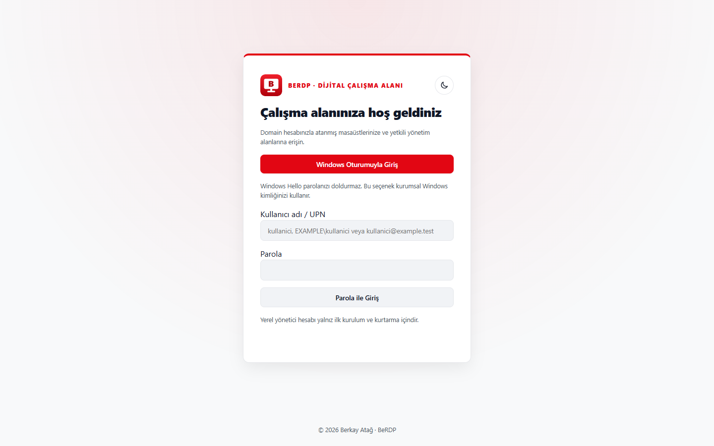
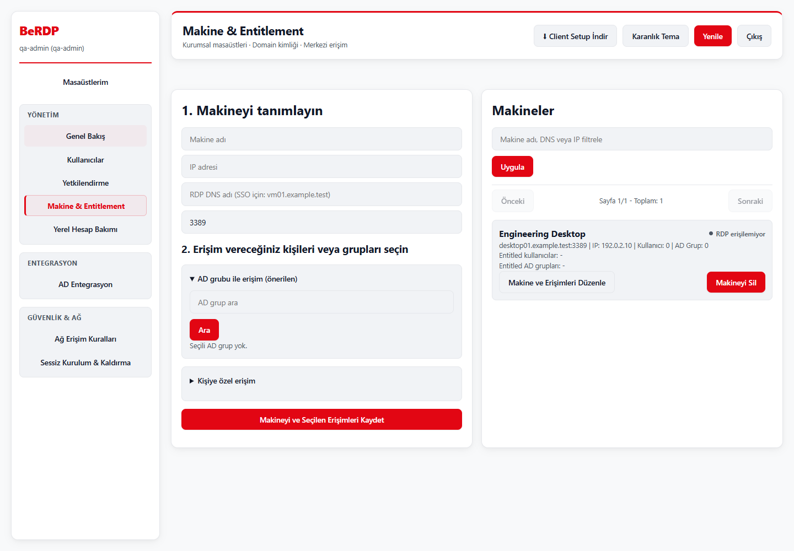

Kimliğe bağlı erişim
Yerel hesapları ve Active Directory gruplarını makinelere atayın. Güncel atamayı bağlantı öncesinde doğrulayın.
Windows masaüstleri. Merkezi erişim.
Makinelerinizi ve erişim atamalarınızı tek yerde yönetin. Kullanıcılarınızı bildikleri Windows masaüstüne ulaştırın. Hedef VM'lere ajan yüklemeden.

Envanter, kullanıcılar ve AD grupları aynı konsolda. Açık ve koyu tema, sade bir günlük kullanım deneyimi.

Yerel hesapları ve Active Directory gruplarını makinelere atayın. Güncel atamayı bağlantı öncesinde doğrulayın.
Yerleşik RDP istemcisi, çoklu ekran ve yerel kaynak seçimi. Windows'un güvenlik ve kaynak izinlerini korur.
Kendi sunucunuzda barındırın. İhtiyaç halinde Apache Guacamole ile tarayıcı erişimi ekleyin.
Server paketini kurun, kurum sertifikanızla HTTPS yayınını yapılandırın.
Kendi ilk yöneticinizi oluşturun. Kullanıcı, AD grubu ve makine atamalarını ekleyin.
HTTPS API adresini kurulumda belirtin. Hedef VM'lerde Windows RDP haklarını yönetin.
Server ve Client için ayrı Windows x64 kurulum paketleri.
Sürüm adayı. Gerçek AD/RDP ve kurumsal kurulum kabul testlerini pilot ortamınızda tamamlayın. Paketler şu anda kod imzası içermez.